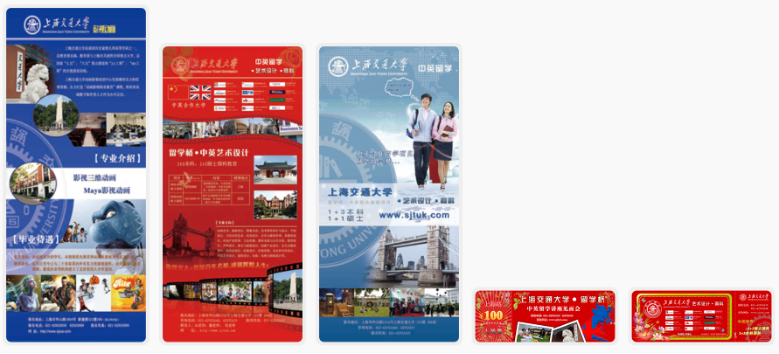

Acking's Curriculum Vitae
| Project 11：HotNest Bridging Europe and Asia［Team Project］ | |||||
|---|---|---|---|---|---|
| Project Role | CTO | ||||
| Project Vision |
The HotNest overseas project is a bridge and platform for overseas consumer brands to enter China. Based on the self-developed digital platform, deeply participate in the operation management empowerment of international brands in the Chinese market, and provide one-stop operation management cloud services such as consumer insights, intelligent analysis and visualization of business data, logistics, online and offline retail, and channel distribution; At the same time, it will share overseas preferred products for Chinese consumers to meet the needs of domestic consumption upgrades. Give full play to the advantages of the platform, and aim to become the preferred strategic partner for overseas brands to enter China, and become the preferred platform for Chinese consumers to choose high-quality, cost-effective overseas products. |
||||
| Project Introduction |
According to project requirements, we have developed multiple systems for use by different roles I、HotNest official website -PC/ Mobile（Foreground scene）Testing Phase：Using our proprietary technology and algorithms, we generate automated market, social, e-commerce and consumer data analytics to provide brands detailed assessment of the Chinese market situation. Acceleration Phase：Support brand in all aspects and grow rapidly in China. Hotnest platform aggregates and monitors logistic, legal, marketing and sales partners in China. Our system is a one stop shop for brands to enter and grow in China. Our platform helps brands to reach sales and marketing goals effortless. Maturation Phase：Land in China,dive deep into Chinese market. Closely cooperate with consumer brands, assist brand to establish their China business operation, build a local team, and provide assistance in all relevant aspects to enable brands to quickly work independently in China. II、Brand WorkbenchData Overview：Display brand sales data, sales trends, product rankings, and social trends. Sales Management：Product list】mainly includes commodity inventory, sales volume, sales volume, shelf platform, commodity trend, and inventory management;【Settlement】It is mainly used for month-end settlement for the brand side. The billing data of Alipay is imported into the system, and the system automatically counts the daily orders and sales details of a single product. Big Data：：【Social Data】Used for brand social placement analysis, total social data, recent interaction changes, comment reposting in the past 30 days, and detailed data on brand-related tweets. Files Library：Similar to the cloud sharing between the brand side and the brand operation, it is mainly used for the brand side to provide products and original materials needed by the e-commerce platform, and the operator provides the brand side with monthly brand operation reports, etc. Dashboard：Provide real-time sales data of sales festivals. III、HotNest Console(Mainly provided for brand management and brand operation personnel)My Brand：Manage brands in the test period and acceleration period. The test period is mainly about brand authorization management, social data and e-commerce data of competing products, market analysis reports, and brand landing plans. Channel Management：【Channel-related】Provide customer registration, communication management, contract management, and offline purchase and sales order management. 【Supply and Marketing Platform】It mainly connects with the Tmall Supply and Marketing Platform API interface to display details of supply and marketing store information and supply and marketing orders. Collection Management：Submit collection requirements according to formulating keywords, specifying products, specifying links, etc. According to the submitted requirements, the system will carry out relevant data collection, analysis and processing, and obtain an orderly data display. Marketing account analysis：The KOL management platform counts the comprehensive data of KOLs on various popular platforms, and provides marketers with reference to the fit between KOLs and brand promotion products. |
||||
| Hardware Environment | Alibaba Cloud server cluster | Software Environment | docker、win、centos、apache、nginx、php、python、mysql、spark、cassandra、sorl | ||
| Development Tool | phpstorm、pystorm、sequel pro、devcenter... | Development Cycle | 2019-10 to 2012-10 （3years） | ||
| Technological Framework | Front-end use Angular.js、Bootstrap、ECharts and other frameworks；Backend use Yii2、Django、sorl；Database use mysql、cassandra、redis；Data use Scrapy、spark、Alibaba Cloud DSE cluster；WEB service use docker nginx php uwsgi. | ||||
| Project Features | Collect a large amount of social and e-commerce data, use it as big data analysis of the brand's competing products, and provide it to the brand and operators to make brand marketing decisions. The users of the platform are distributed at home and abroad, and the whole site is accelerated by dcdn, the front and back ends are separated, and microservices are set up. | ||||
| Project Achievement | A total of 35 overseas brands have entered the HotNest platform, and 4 have entered the acceleration period; there are 200+ test products SUK. In channel management, there are 63 supply and marketing stores and 20+ channel customers. According to user feedback, version iteration, function update and system optimization are carried out. It has been well received by the brand and operation personnel, and has strengthened the communication and data management between the brand and operations. | ||||
| Project 10：TRY［Team Project］ | |||||
|---|---|---|---|---|---|
| Project Role | CTO | ||||
| Project Background |
As the company's business continues to be provided, more and more overseas brands enter the market, and more products are tested overseas. The tests by the previous internal personnel of the company extend to the trials of people around them. So I proposed to the company's leaders that a product testing platform could be developed. From the naming of the platform, to the registration of the trademark, to the selection of the technology. Hence the WeChat mini-program "TRY outside Chiwai". And the internal test will be launched on July 1, 2021, and we have invited 50 users as our seed users. |
||||
| Project Introduction |
Free Try：Provide users with free/freight payment methods to participate in activities, and apply for trials of trial products (types of activities: ordinary activities, invitation-only activities, new promotion activities, etc.) Featured column：It is mainly the topic or high-quality evaluation of overseas high-quality niche brands/products, so that more domestic consumers can understand the characteristics of these niche products. Forum：It mainly shows the trial report after the user experiences the product. These include commentary and question-and-answer modules. Brand Museum：Collected 10W+ product information through overseas Amazon and other overseas beauty sectors. Through data cleaning, the products that conform to the external tone of the pool are entered under the brand museum. It is provided for the user to view the product introduction, and if the user recommends the product, it will enter our recommendation list. Currency Mall：When users participate in activities, sign in, submit trial reports, etc. to obtain game currency, the game currency can be exchanged for trial products in the mall. It is mainly used to provide users with daily activity and stickiness. |
||||
| Hardware Environment | Alibaba Cloud server cluster | Software Environment | docker、win、centos、nginx、python、mysql、WeChat mini program | ||
| Development Tool | VSCode、Pycharm、Navicat ... | Development Cycle | 2021-03 to now | ||
| Technological Framework | Front-end use Taro、VUE.js and other frameworks；Backend use Django；Database use mysql、Alibaba Cloud DSE cluster；WEB service use docker nginx php uwsgi. | ||||
| Personnel Division |
There are 5 main participants in this project: 1 product manager, 1 user/activity operator, 1 UI designer, 1 front-end engineer, and 1 back-end engineer. I am mainly responsible for the overall control of the project, the review of event planning, the review of functional modules, and the coordination between trial products and the company's international business department. |
||||
| Project Achievement | After the mini program was launched, we added the invitation must-hit event. Some products with high value for users are put on the shelves, which encourages old users to attract new users to register and participate in our ordinary activities. Quickly accumulated 5000 registered users in 3 months. Later, we developed new activities, taking the theme of Women's Day as an opportunity, and planned this activity for the first time. On the day of the event, 700+ new users were registered. Six months after the mini program was launched, we conducted an overall review of the project, analyzed the current user portraits, and also discussed our project's vision, crowd positioning, and profit methods. | ||||
| Project 9：AI intelligent marketing solution platform［Team Project］ | |||||
|---|---|---|---|---|---|
| Project Role | CTO | ||||
| Project Introduction |
Supplier Matching：Business Development personnel expand suppliers massively and enter them into the supplier database. Sales acquire the needs of a large number of companies to form sales leads. We perform algorithmic matching based on the needs of the demand side and the scores of the supplier pool. Make the service provider's services meet customer needs for project cooperation. Marketing data monitoring：Using the analysis results of the data team, it can provide marketing support for the user's KOL launch from the beginning to the end of the cycle. As a real-time monitoring tool to achieve the user's marketing goals. Marketing Consulting Services：Through the "data + platform + consulting" approach, provide full life cycle services for brand digital upgrades Supplier：HotNest has a complete supplier system, based in first-tier cities such as Beijing, Shanghai, Guangzhou and Shenzhen, and radiating to many key cities across the country. The scope of coverage covers multi-dimensional services such as brand consulting, advertising communication, public relations communication, media communication, digital marketing, event marketing, exhibition marketing, etc., and solves the diversified marketing needs of users in one stop. AI matching system： AI intelligent vendor matching system，helps you to connect with high-matching marketing vendors in a short period of time, save the inefficient search, invalid communication in the process, and provide work efficiency. At the same time, the platform guarantees the legal compliance of each matching supplier, further giving users no worries. Marketing tools：Algorithm analysis is based on big data and AI helps users recognize and understand their own consumers portraits, analyzes the target users' preferences, and various classifications to facilitate accurate positioning of their own consumers. At the same time, the status and response of KOL data after releasing can also be monitored. It provides data feedback which can be used in content production and dissemination strategies. Industry data report：helps you to understand the micro market of your industry，Illusions in the market often mislead users to judge and grasp the overall development of the industry. HotNest, an industry data report, provides users with digital information reports of the industry through data acquisition, cleaning and analysis. Before you conduct marketing events, learn about the current hot information of the industry / product,content that user is concerned about, the state of public opinion, etc. Help you to have a decision basis in the choice of marketing types and marketing content. |
||||
| Hardware Environment | Alibaba Cloud server cluster | Software Environment | win、centos、apache、nginx、php、mysql | ||
| Development Tool | VSCode、 phpstorm | Development Cycle | 2017-06 to 2019-06 （2years） | ||
| Technological Framework | Front-end use AngularJS、Ionic frameworks；Backend use Yii2、Yii2-restful API；Database use mysql；WEB service use docker nginx php | ||||
| Project Achievement | The AI intelligent marketing platform has attracted 2,000+ high-quality service providers to settle in after its launch, providing intelligent marketing consulting services for 10,000+ users. As the number of users increases, the platform introduces online IM services. Users and service providers can directly communicate online and reach cooperation quickly and accurately. | ||||
| Project 8：HotNest Social Analysis System［Team Project］ | |||||
|---|---|---|---|---|---|
| Project Role | Full Stack Developer | ||||
| Project Introduction |
I、HotNest real-time systemII、HotNest Social Analysis SystemSocial media content data, Weibo/WeChat Top list, keyword ranking, keyword sentiment analysis, KOL profile, people profile, demand map III、Publicis Data System Network Keyword Project (API interface)IV、Socialbakers project (API interface)V、CYzone ProjectVI、5iFood Project |
||||
| Hardware Environment | Alibaba Cloud server cluster | Software Environment | docker，win、centos、apache、nginx、php、mysql、spark、cassandra、sorl | ||
| Development Tool | phpstorm、sequel pro、devcenter... | Development Cycle | 2016-07 to 2018-08 （2years+） | ||
| Technological Framework | Front-end use Bootstrap、ECharts and other frameworks；Backend use Yii2、sorl；Database use mysql、cassandra、redis；Data use Scrapy、spark、Alibaba Cloud DSE cluster；WEB service use docker nginx php. | ||||
| Project Achievement | Through the real-time system monitoring of the whole network data of more than 10 social media platforms, analyze hot trends. By analyzing the results, monitor the posting data of Weibo/WeChat 2W+ KOL accounts, and collect the comments of each tweet for positive and negative sentiment scores. Calculate popular keywords and word clouds by word frequency. With the above technology and data accumulation, cooperate with Publicis Group to provide the whole network keyword API interface to the other party's data system. And cooperate with the foreign Socialbakers data system (Emplifi), provide WeChat / Weibo / Douyin / Youku’s KOL account’s reading, likes, favorites, comments and other data for 30 days, and provide reference data for advertising effect monitoring. Through cooperation with Cyzone, we have developed a set to collect news on the financing situation of various domestic companies, conduct data cleaning and analysis, and obtain the financing situation of each company's round. | ||||
| Project 7：Beijing University of Aeronautics&Astronautics System［Team Project］ | |||||
|---|---|---|---|---|---|
| Project Role | Full Stack Developer & Project Manager | ||||
| Project Introduction |
I、Student Online Registration SystemII、Official website of Beijing University Shanghai Learning CenterIII、Campus Student Exam Subject Time Classroom Inquiry SystemIV、University Degree English Registration SystemV、Exam Service PlatformVI、Educational Affairs PlatformVII、Online examination system (pc terminal, student mobile terminal)VIII、Graduation certificate degree certificate printing system |
||||
| Hardware Environment | Dell R720 service、Alibaba Cloud RDS Database | Software Environment | win、centos、apache、php、mysql | ||
| Development Tool | ps、sublime text 2、MindManager、Axure | VSCode、 phpstorm | 2012-05 to 2015-08 （3years+） | ||
| Project Achievement | At that time, it was the first company to use the method of reading ID cards to enter student registration information. Taking this as an opportunity, we have a high degree of cooperation with Beijing University. Developed Beijing University's registration system, student management platform, educational administration platform, online computer-based examination platform, and graduation certificate printing system. The company is responsible for the management of more than 30 learning centers in various regions in East China and Central China. About 200,000+ students are enrolled, of which the highest single-semester enrollment reaches 50,000. The system provides educational administration services for students from enrollment to graduation. | ||||
| Project 6：ChinaCast Education Platform［Team Project］ | |||||
|---|---|---|---|---|---|
| Project Role | Full Stack Developer & Project Manager | ||||
| Project Introduction |
I、Beijing ChinaCast Education WebsiteII、Shanghai Electric Power Distance Education Training platform websiteIII、ZhenZhengHao Student Management PlatformIV、Shanghai Vocational Training School for Employees Corporate websiteV、Shanghai Jiaotong University Computer-based test assignment submission system for students |
||||
| Hardware Environment | Alibaba Cloud DSE server | Software Environment | win、centos、nginx、apache、php、mysql | ||
| Development Tool | ps、sublime text 2、Axure | Development Cycle | 2011-03 to 2012-12 (1years+) | ||
| Project Achievement | Through the distance education platform, it cooperates with Shanghai Jiaotong University and Tongji University for distance education, establishes a learning center in Shanghai/Beijing and cooperates with colleges and universities to recruit students, and the company has established its own R&D center. It cooperated with the Electric Power College to build an online platform for distance education and training in Shanghai, which was the earliest MOOC concept at that time. Cooperated with a really good company to build a set of children's homework management platform. Parents and schools can check their children's homework in real time. In cooperation with Shanghai Jiaotong University, a computer room assignment submission system was built for students to take computer exams. | ||||
| Project 5：Family Farm Management Platform［Team Project］ | |||||
|---|---|---|---|---|---|
| Project Role | Full Stack Developer & Project Manager | ||||
| Project Introduction |
I、Family Farm Ledger Management SystemII、Financial software system for farmers' professional cooperatives |
||||
| Hardware Environment | Alibaba Cloud server cluster | Software Environment | docker，win、centos、apache、nginx、php、mysql、spark、cassandra、sorl | ||
| Development Tool | phpstorm、sequel pro、devcenter... | Development Cycle | 2017-08 to 2019-10 （2years+） | ||
| Technological Framework | Front-end use Bootstrap、Angular.js and other frameworks；Backend use Yii2；Database use mysql；EB service use docker nginx php. | ||||
| Responsible for content | Product requirements determination, database table design, writing back-end API interface, server construction project deployment, program update and maintenance. | ||||
| Project Achievement | After 2 years, a set of account management platform for agricultural family farms and a financial system for farmers' cooperatives have been built, and a new agricultural business service system has been provided for more than 10 counties and cities. The existing system has 1,000+ account sets. And the system has obtained the software copyright. | ||||
| Project 4：Apcap Official website［Personal Development］ | |||||
|---|---|---|---|---|---|
| Project Role | Full Stack Developer & Project Manager | ||||
| Project Introduction |
I、Guide pageII、Into ApcapIntroduction to Apcap, Investment philosophy, Investment logic, Investment style, Investment strategy III、Investment CaseIV、Follow ApcapV、Contact us |
||||
| Hardware Environment | Alibaba Cloud DSE server | Software Environment | win、centos、apache、php、mysql | ||
| Development Tool | ps、sublime text 2 | Development Cycle | 2017-06 to 2017-08 (2 months) | ||
| Responsible for content | Pre-requirement communication, page design, page slicing, back-end writing, server construction. | ||||
| Project Achievement | According to the needs of the customer boss, communicate and determine the column. After determining the column, design the home page and inner page through the logo provided by the customer. Then complete the front-end and back-end development, select servers and build services for customers, and maintain website content.[Entry Official website] | ||||
| Project 3：P2P Financial Project［Team Project］ | |||||
|---|---|---|---|---|---|
| Project Role | Front-end development | ||||
| Project Introduction |
BanJin webis a newly established Internet investment and wealth management service platform. It helps you to invest your spare money on the Internet or lend it to companies, etc., and obtain a variety of investment returns (interest, equity, real objects, services) by pooling your money. Develop Cycle：2014/05-2015/03（10 months） YunLiYu webweb is the first student-aid platform for distance education tuition installments. It is committed to providing people with a "transparent, efficient, safe, reliable, and win-win" p2p e-commerce platform. The traditional education payment mode of paying tuition fees to promote the upgrading of related education industries. Develop Cycle：2017/06-2017/08（2 months） |
||||
| Hardware Environment | Alibaba Cloud server cluster | Software Environment | win、centos、apache、php、mysql | ||
| Development Tool | ps、sublime text 2、Axure | ||||
| Responsible for content | Discuss website business processes, make website prototypes, slice website design drafts, code debugging, test bugs, and configure online servers. | ||||
| Project 2：pallas-hk Official website［Personal Development］ | |||||
|---|---|---|---|---|---|
| Project Role | Full Stack Developer & Project Manager | ||||
| Project Introduction |
I、About usII、News and informationIII、Brands and ProductsIV、Project caseV、DownloadsVI、Contact usVII、New product |
||||
| Hardware Environment | Alibaba Cloud ECS server | Software Environment | win、centos、apache、php、mysql | ||
| Development Tool | ps、sublime text 2 | Development Cycle | 2015-05 to 2015-06 （1 month） | ||
| Responsible for content | According to the website module, design the homepage, submit it to the boss for confirmation, modify the homepage, design each column page, finally determine the website design page, slice it, then use Yii to write the program, design the background management module, purchase the Alibaba Cloud ESC server, and build the LAMP The server performs domain name resolution and the website goes online. Use CNZZ for website visit statistics. | ||||
| Project 1：Design college student recruitment brochure / Exhibition board［Personal design］ | |||||
|---|---|---|---|---|---|
| Project Role | UI | ||||
| Development Tool | ps、ai | Development Cycle | 1 month | ||
| Project Introduction | Responsible for designing the content of word documents into promotional pages and Exhibition board.[view] | ||||
| Project Achievement |  | ||||